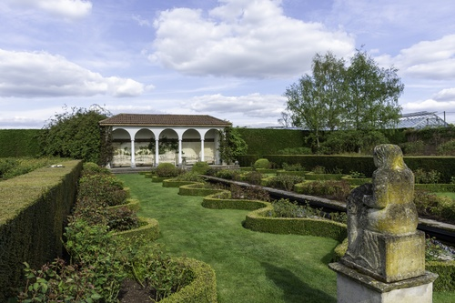

David Austin Rose Garden
The rose garden at David Austin Roses is considered by many to be one of the most beautiful in the world. The garden covers an area of around 2 acres and there over 700 different varieties of rose planted in the various themed areas.
Hawkstone Park and Follies

During the 19th Century, Hawkstone Park and Follies was one of the most visited landscapes in Britain. Hawkstone Park and Follies is set in 100 acres of parkland and is a range of natural sandstone hills that were developed to include gullies, caves, towers and bridges. In the 20th Century the landscape became forgotten and overgrown. It is now designated as a Grade I listed landscape by English Heritage, following a multi-million pound restoration project it reopened in 1993.
Richard Hill, King and Queen’s Diplomat and Lord of the Treasury, inherited the estate in 1700. Travels to the continent inspired him to make changes to Hawkstone - over the next 100 years the grounds were shaped with new terraces, tree lined walks, shell encrusted grotto and various Follies for visitors to explore. Visitor numbers grew throughout the late 1700s and by 1800 Hawkstone was famous.
The grounds continued to be added to through the 1800s with new specimens of plants from all over the World. However, the expanding estate began to exceed the family’s finances, and in 1894 the last member of the Hill family to own Hawkstone was declared bankrupt.